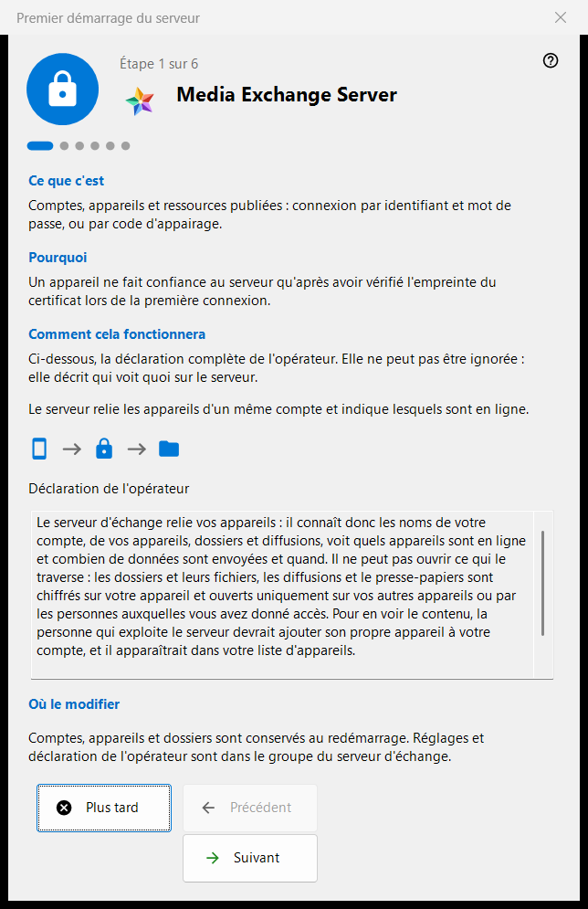
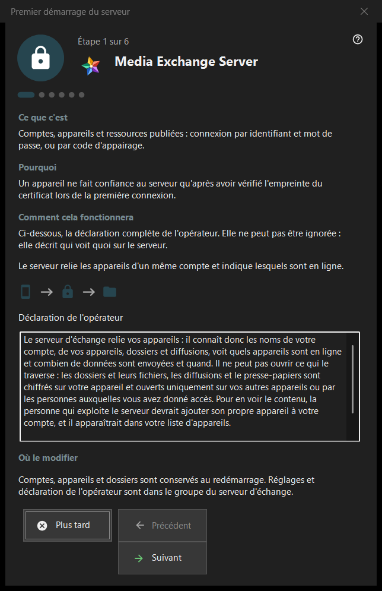

Premier démarrage du serveur
Objectif
Un guide de premier démarrage pour le groupe du serveur d'échange de Share Manager. Il explique ce que devient l'ordinateur, présente la déclaration de l'opérateur, règle les ports, l'adresse pour les clients et le premier compte, et se termine sur l'état du serveur. Il ne s'ouvre que lorsque le serveur d'échange est présent et activé.


Dans cet ordre
- Lisez la déclaration de l'opérateur sur la première page.
- Vérifiez les ports et la règle du pare-feu.
- Sur une édition serveur sans service, décidez du service Windows.
- Renseignez l'adresse pour les clients.
- Créez le premier compte.
- Vérifiez l'empreinte du certificat et appuyez sur «Terminer».
Les éléments
Pages et boutons
Le pied de page affiche «Étape N sur M» ; «Précédent», «Suivant» et «Plus tard» fonctionnent comme dans n'importe quel assistant, et «Terminer» sur la dernière page ouvre le groupe du serveur d'échange du gestionnaire. On peut passer une page sans rien changer : le serveur reste alors arrêté ou tel qu'il était.
Déclaration de l'opérateur
La déclaration complète de qui voit quoi sur le serveur. On ne peut pas la passer. Le serveur relie les appareils d'un compte et indique lesquels sont en ligne.
Ports et pare-feu
Un port de rencontre pour les appareils et une plage de ports pour les clients tiers. Les appareils doivent connaître le port du serveur, donc les modifications ne s'appliquent qu'aux nouveaux codes. La règle du pare-feu appartient au programme, si bien qu'un changement de port n'exige pas de nouvelle règle. Ces valeurs se trouvent dans le groupe du serveur d'échange.
Service Windows
Affiché uniquement sur une édition serveur où le service n'existe pas encore. Un service garde le serveur disponible quand personne n'est connecté. La case à cocher ne fait que retenir votre accord : le service est enregistré après la création du premier compte, avec une seule demande d'élévation, et rien n'est installé avant. «Enregistrer comme service..» dans le groupe d'échange fait la même chose plus tard.
Adresse pour les clients
«Adresse pour les clients (hôte:port) :» est ce que les autres appareils utilisent pour joindre cet ordinateur. «Proposer une adresse locale» ne remplit le champ que lorsque vous appuyez dessus. Une adresse vide garde valide un premier démarrage purement local, mais cache les diffusions et les connexions de dossiers aux autres appareils.
Premier compte
Le compte avec lequel se connecte le premier appareil. Choisissez «Générer un mot de passe» ou «Saisir votre mot de passe» ; «Connecter ce PC au compte» relie cet ordinateur au compte. «Suivant» crée le compte, démarre le serveur et vérifie le certificat. Le mot de passe est affiché une seule fois, dans la boîte de dialogue existante, et n'est pas conservé sur ce PC. Un échec survenu après la création du compte ne le supprime pas.
Le serveur est prêt
La dernière page indique où sont consignés l'adresse, l'identifiant et l'empreinte du certificat, et propose «Copier l'empreinte» et «Chaîne de connexion et code QR..». Un appareil fait confiance au serveur après avoir vérifié l'empreinte lors de sa première connexion. Les liens «Connecter un téléphone (aide)» et «Publier le premier dossier (aide)» mènent aux pages d'aide correspondantes.
Paramètres du gestionnaire · Paramètres de partage SFTP · Paramètres du serveur d’échange